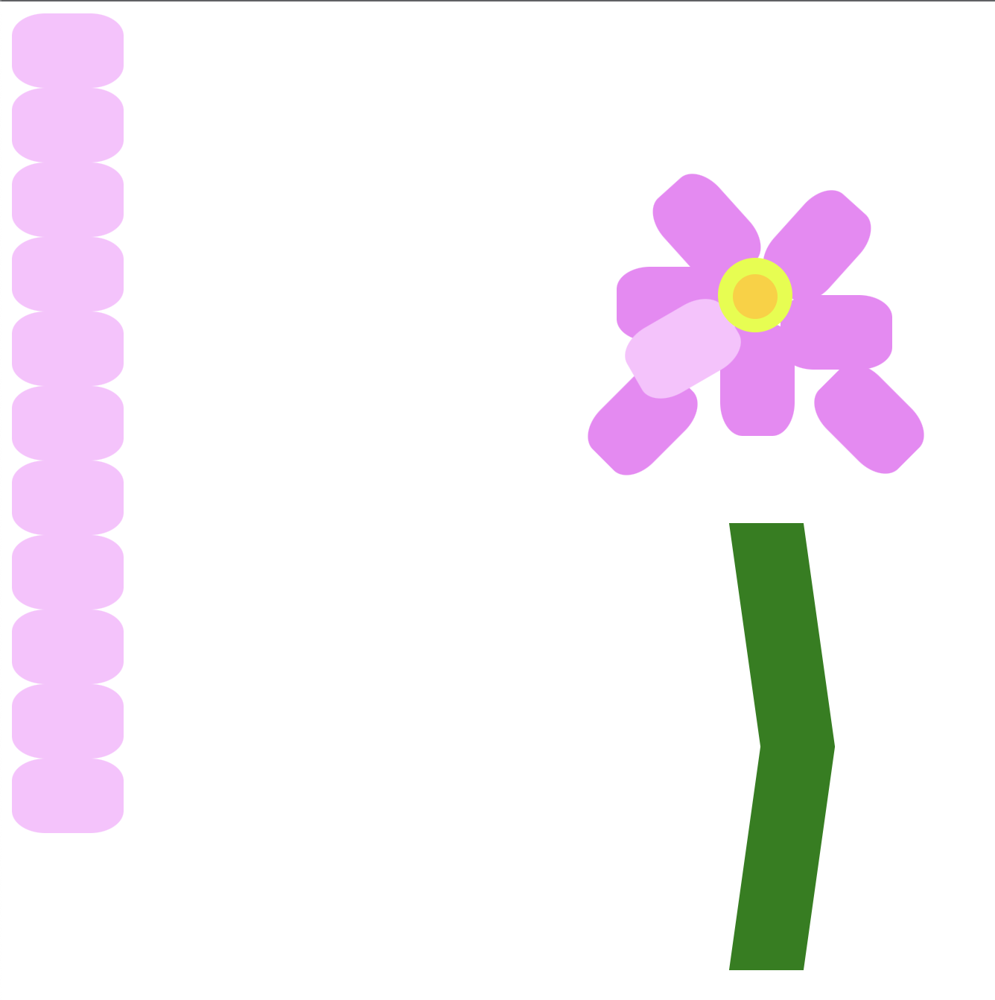

This sketch was the base for my 6th sketch. I found it was too vibrant and wasn't giving me the desired effect.
This was a sketch made in class where the mouse changes the colour of the canvas. As much as I thought this would be a cool background, it makes other interactive elements a bit awkward.
This was a failed loop constanting of s', that I thought would be cool if the curve of the loop may make the s. This did not work out.
In this sketch I was having fun with the slider, while exploring light. However when I went to add the text with the orbit control I found that the text would move with the form. Plus if I put the text in the setup function it gets covered. So this one didn't work out.
Again this is from an in class tutorial where we were exploring fountains. Though this sketch isn't exciting, it gave me the idea for my 19th sketch.
I wanted to experiment with text, as I don't use it much, or at all in my sketchs. However this piece was too boring to be including with the other 21 sketches.
This piece was a 30min CSS sketch of a flower in class. Clearly it is incompleted. However my true intention was to depict the each petal of the flower, which was a huge mistake as it would take me longer.